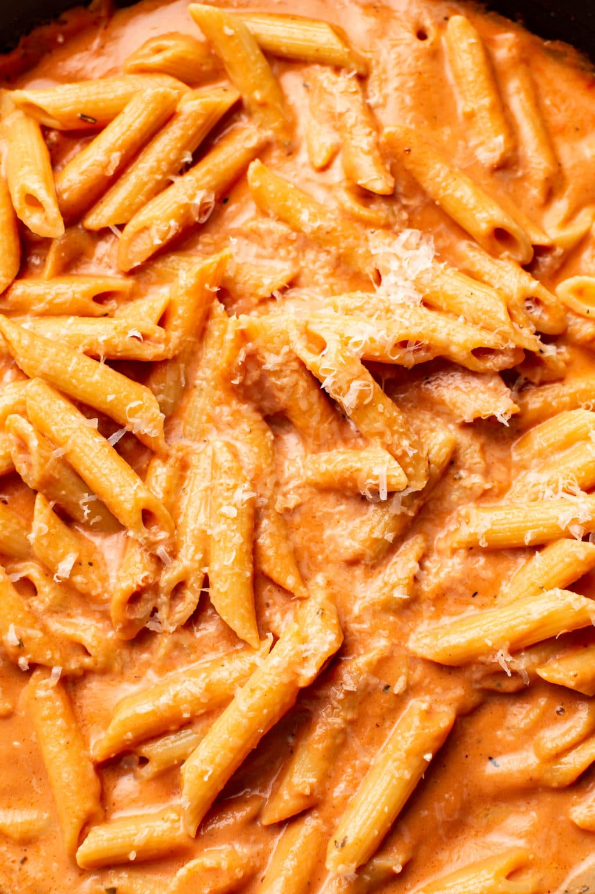

Creamy Pasta Recipe

Description
This super easy creamy pasta recipe comes together quickly and uses everyday ingredients.
This is something for everyone! Have fun cooking!
Ingedients
- Pasta -You can use any kind of pasta for this.
- Butter
- Garlic
- Tomato paste
- Tomato sauce
- Heavy cream
- Seasoning -Pepper, Salt or even Cheese. Whatever fits your taste.
Steps
- Boil a large, salted pot of water for your pasta and cook it according to package instructions.
- Meanwhile (once the pasta starts to cook), add the butter to a skillet over medium-high heat. Once it melts, add the garlic and sauté for about a minute, stirring constantly.
- Add in the tomato paste, tomato sauce and cream. Stir until it's nice and smooth. Let the sauce cook for about 5 minutes or until it's thickened to your liking (it should be very gently bubbling, so you may need to turn down the heat).
- Season the sauce with salt & pepper as needed.
- Drain the pasta and toss with the sauce (add a splash of hot pasta water if the sauce gets too thick). Serve immediately with plenty of parmesan cheese over top.
Bon appetit!
Other Recipes